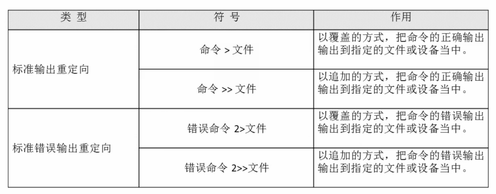

标准输入输出
| 设备 | 设备文件名 | 文件描述符 | 类型 |
|---|---|---|---|
| 键盘 | /dev/stdin |
0 | 标准输入 |
| 显示器 | /dev/sdtout |
1 | 标准输出 |
| 显示器 | /dev/sdteer |
2 | 标准错误输出 |
输出重定向

如ipconfig > ~/desktop/test.log，将内容保存在日志文件中
只要命令有输出就能重定向到文件中
特别注意，错误输出大于号和文件之间不能有空格！！！
正确和错误输出同时保存

3和4作用是一样的！推荐3,4,5！
特别这个文件/dev/null，被称为『黑洞』，如果把命令重定向到这儿，系统就直接抛弃了
输入重定向
wc【选项】【文件名】
选项：-c 统计字节数-w 统计单词数-l 统计行数
这里首先引入这个例子——wc < test.log，wc命令原本的输入是键盘，现在重新定向为文件，当然，其实不需要<
另外一个例子是——wc << ddy，它会要求你不断输入，知道再遇到ddy，就会停止并做相关统计，实际工作中基本不会用到